» We're
entering a new world in which data may be more important than software. Tim
O'Reilly
» You
can have data without information, but you cannot have information
without data. Daniel
Keys Moran
» Errors
using inadequate data are much less than those using no data at all. Charles
Babbage
Welcome to StatComm,
the Real Time Statistics for your web.
We appreciate the chance for testing and using this plugin. In case you
need
it , there will be more help
on the WP
Get Ready
site
and their forums.
Current Version:
V1.7.41 (2012-07-30 23:08 -3GT)
Changes/Improvement introduced:
Changes/Features/Improvement
|
What is in it for you?
|
- Fix MaxMind error when opening.
|
- Affected some users displaying a warning on the top of the site. Fixed
|
- Improved Report error now with correct graphics.load.
|
- Error report works in similar fashion as Overview
|
Introduction
We'll often use de term UAS
db for User
Agent String database.
- What is
Statcomm?
- How does it works?
- StatComm Main Features:
- Graphics
view: Visual Traffic View
- Details
- Spy
feature: who's there?
- Global Search
- Export Feature
- Control
& Filter &Customize Data View:
Options
- Collecting/ignoring logged users
- Collecting /ignoring spiders
- Set time frame for cutting analytic data (for all data
or only spiders)
- Setting graphics options
- Setting minimun role access to operate
- Unknown User
Agents
- Multisite
- Subplugins
- Error report subplugin
- StatComm
Advanced Features
- Ban Ip
- Browser Detection
- Os detection
- Search Engines
- Spiders
- Extensibility: statcomm_info action and
statcomm_preinsert filter.
- Multilanguaje
features. and considerations
- Widgets
- Services
used by StatComm
- Migration data
- FAQ
- Credits
1. What
is
StatPress Comunity?
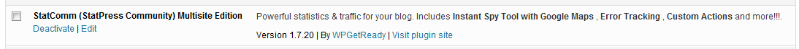
StatComm
plugin (Statpress Community) shows site traffic providing a real time
graphics from many different sources, collecting information
about
visitors,
spiders, search keywords, feeds, browsers, OS (Operative System)
and more.
2. How
does it
works?
StatComm
relies on Wordpress capabilities to do the task. Wordpress include
hooks to get the information about the traffic, but this
information is
raw, without distinction of procedence or destination.
StatComm
is capable of filtering this data, extract the relevant
information and present it in a readable visual
format. It combines the raw information with different databases
getting an accurate view of incoming visitors.
3. StatComm Main Features
StatComm
provides a set of features for visualizing real time traffic, including
graphics bar, country flags and many other indicators.
-
Graphics
view: Visual Traffic View
The Visual Traffic View can be accessed clicking the
StatPress main
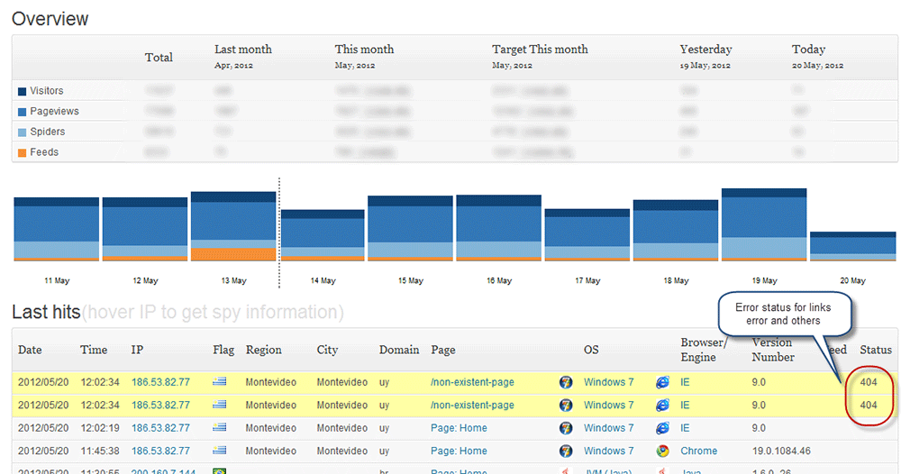
In a single view, you will appreciate the current day traffic,
categorized by Visitors, PageViews, Spiders and Feeds. Over the graphic
bar, you will have a briefing about today's traffic,
yesterday's traffic and several calculations and consolidated data.
Tip:
hover the mouse on each graphic bar to see specific values of
visitors, pageviews ,spiders and feeds.
Tip 2:
hover the mouse over the IP to spy information about current user. See
Instant
Spy
Tip 3
(new in 1.7.10): hover on date to see a resume of visitors,
pageviews,spiders and feeds.
Above the graphics you have several reports on the current traffic:
- Last hits:
Report about the 20 last visitors, including time, page they
went, OS, and browser.
- New in
v1.6.90: StatComm is able to track error pages and other
errors, highlighting the rows.
- New in
v1.7.10: Added error information resume in graphic view
(in red)
New on
StatComm 1.6.3:
New
on StatComm 1.6.60:
- When
GeoLocation enabled, the Last Hits provide more info about country
(hover flag to see the country name), the region and the city.
- Important:
columns Flag, Region & City only visible if you download and
enabled the Maxmind database. See Plugin Options
- Last search
terms:
shows what were the last terms that users were
looking for before reach your site. Very useful for SEO purposes.
(Improved on StatComm 1.6.3, with icons, links, hovering information
and more)
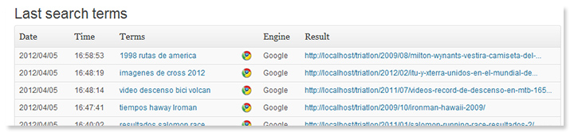
- Improved Last Search in 1.6.4
- Last referrers:
shows where are the incoming users going. (improved on StatComm 1.6.3)
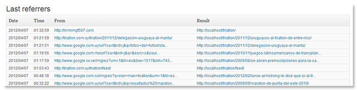
- Last agents:
show what were the last agents (browsers or different programs
navigating on your site) who reached the site.(Improved on StatComm
1.6.3, with icons, links, hovering information and more)
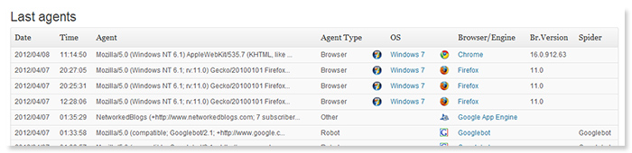
- Last pages:
show the last pages visited for the visitors (Improved on StatComm
1.6.3, with icons, links, hovering information and more)
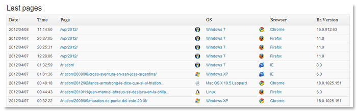
- Last spiders:
show the last spider (search engines) which visited the site. (Improved
on StatComm 1.6.3, with icons, links, hovering information and more)
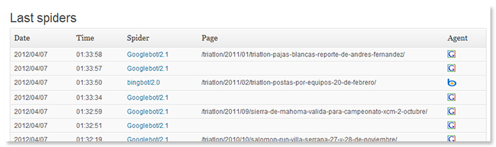
In the
bottom of the page there is also some valuable information to be
noted:
- Current table size/number of records.
- Queries executed
- Queries cached. Statcomm currently uses a custom cache
system to boost the data visualization.
- Current spent for displaying the entire page
- Ohter details: RSS2, ATOM, RSS, and RSS2 and ATOM comments
2. Details
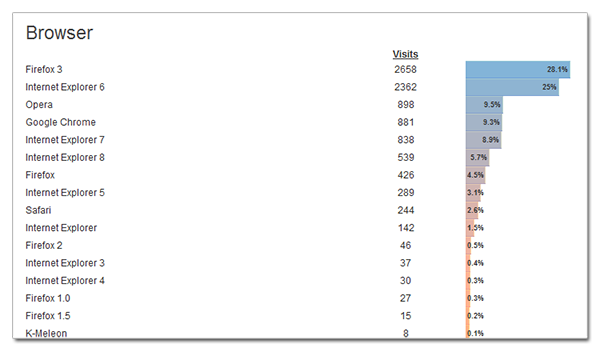
The
Details menu
provides a different statistical view of the data stored. This
view summarizes the information based on all current records
to display trending information and
categorizes in different areas, as Top 5 days, OS, Browser, Feeds
Totals, Search Engines, Top Search Items, Countries, Spiders, etc.
3. Spy
feature: who's there?
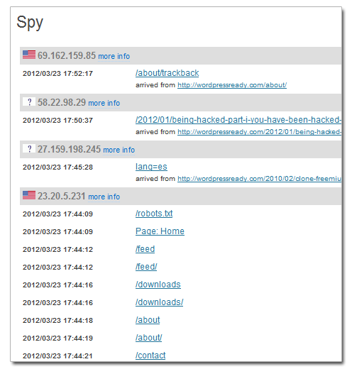
The Spy feature is used to understand and follow the single
activity of particular users, allowing track down the pages visited,
time, procedence and IP.
This view will group the user activity by ip giving
an overview of his/her current navigation trends on the site.
3.1
Instant Spy Tool: Who are you?
From Statcomm 1.6.70 Statcomm provides an extra tool to provide instant
insight information from the current traffic. Since version 1.6.90 it
also includes Google Maps to provide a view from latitude/longitude.
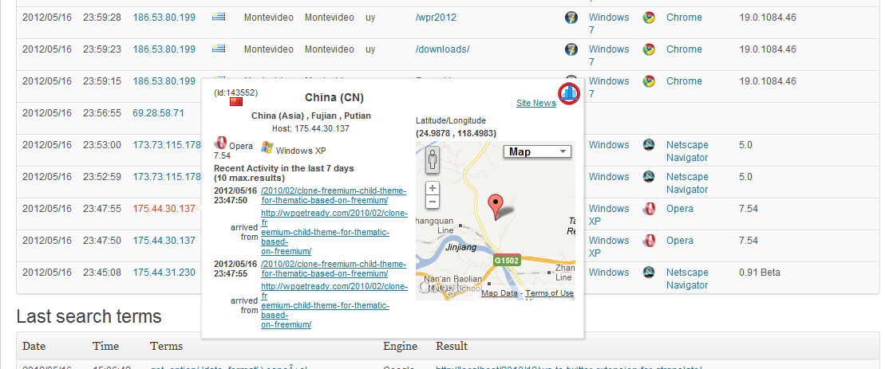
This
tool provides an easy way to see an user activity just hovering the
mouse over the IP. A tooltip will appear providing all information
relative to the current record selected.
The following information is provided:
- Record Id Number
- Nation Flag, Country Name, Continent, City and Region
- Latitude/Longitude
- Browser and Operative System (if applies) . If it is a
RSS reader will provide the best info possible.
- Pages visited by user . You can specify how many
days go back to inspect and also how many max. records to retrieve
(configurable from the Options Panel)
- Searched text if apply.
- New in
v1.6.90: browseable Google Maps.
4. Global
Search
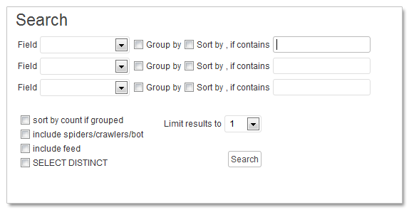
The Global Search allows find information from the data
tables.The search will include all the records currently
stored to retrieve results.
5. Export
Feature
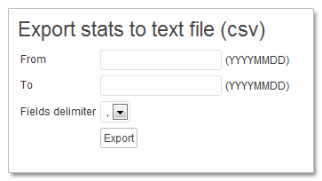
The export data allows saving your traffic data to text or CSV
files
for further analysis. You can even import this information to other
tables for further analysis. Currently it supports date ranges.
6.
Control
& Filter
&Customize data view:
Options
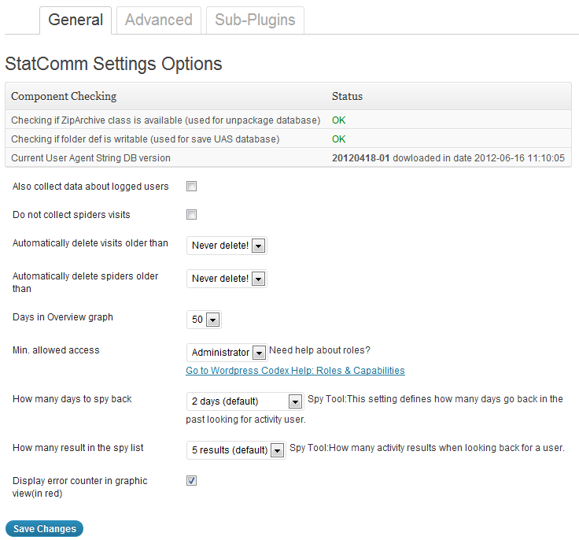
The Options Panel allows to
change different settings and even alter the normal plugin behavior to
your convenience.
After new improvements in version 1.6.40 with using the Settings API
provided for Wordpress, version 1.6.50 continues with the expansion
adding features for automatic data updates.
v1.6.60 added Maxmind Gelocation service.
v1.7.20 added an tabbed Interface, splitting the options in General and
Advanced.
v1.7.30 added subplugin Interface.
The General Panel
The upper panel provides the following information:
- Checking if
ZipArchive class is available:
when
it's time to download the User Agent String data, this info comes
zipped. StatComm uses ZipArchive to unpackage the data. If this
component isn't present, the plugin will be unable of unpackaging the
data.
- What if this class isn't available in your system? The
only drawback will be that you cannot be capable of getting any
updates. In this case we recommend find a way of installing
this
class on the host or disable the download service.
- Checking if
folder def is writable:
StatComm needs this folder be writeable in order to
download updates.
- What
if your def folder is non writeable?: You won't get any UAS db updates.
You can continue working with the current local UAS database.
- I want to make def folder read-only: please
disable the download service to avoid getting any updates.
- Current User
Agent String DB Version: every UAS db has its own version
coded YYYYMMDD-XX (year-month-day-version number) . It will say also
when it was downloaded.
Here you will see the most common options in the General Panel:
- Also collect
data
about logged users: By default, StatComm does not
collect traffic generated by logged users. If this option is enabled,
all activity
would be logged (even admin activity). This option is useful when the
site has specific purpose (like for example, a community with
membership)
- Do not
collect spiders visits: The spiders are automatic programs
browsing your site to collect data
for indexing. They are
not users, but they act like one. Unless exceptional cases, the data
collected from the spiders activity
tends
to be big and useless. This option disable spiders
recording and saves an important space in the records table.
- Automatically
delete visits older than...: StatComm captures
visitor information until eventually the maximum database
capacity or hardware capacity, which ever runs out first. The excesive
amount of data would cause a performance loss on the plugin, specially
evident when summarizing data to display graphic statistics. Depending
on your traffic, it would be wise to clear the data records
from time to time. The available options are (Never delete (which
is default), 1,3,6 or 12 months).
- Automatically
delete spiders visits
older than:
For the reasons above mentioned, the traffic
generated by spiders are normally not worth it. It is possible to
schedule its deletion to keep the records clean , so the plugin will
perform faster. Options are 1 day, 1 week, 1 month or 1 year. It would
be clever to activate this option for deleting undesired data stored
and
keep user information.
- Days in
Overview graph: You can change the amount of columns in
the Overview Graphic Bar from here. Options are 7, 10, 20, 30 and 50
days.
- Minimum
Capability to view stats: Usually the
statistics are allowed only for admin users, but in case you need to
allow
view statistics to user with less privileges, you can change this
feature to an appropiate level. Fixed
in v1.6.5: the user only can set privileges from its user
level and above.
- How many days
to spy back: it is possible to set how many days (from
today) to inspect back and find possible previous visit from current
visitor. You can go as far as one year. We recommend to set no more
than 1 month.(more time means more time to get the calculation done).
- How many days
in the spy list: You can control how many result to
display in Spy tool (Instant Spy and also Spy tool page) from 5
(default) to 20 results.
- (new in
1.7.10):Display
error counter in graphic view (in red): We added a new
option to summarize errors on every day. This is optional and by
default disabled. You would be suprised how many 404 errors you have in
your site everyday. In version 1.7.30 we added the Error Report subplugin to complement this information
The Advanced Panel
The Advanced tab
is only available for Administrators in single mode.
In multisite, these options are only available for Network
administrators under Network Admin Dashboard.
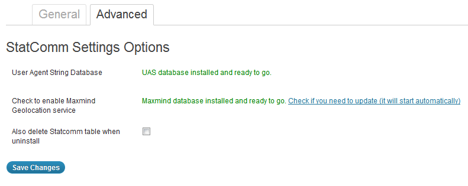
- User Agent
String
Database: This automattic settings detect if there is a
new UAS database available and it will allow you to update if you want.
- Check to
enable User-Agent-String Db download service:
This setting allows installing the Maxmind database, needed for geolocation. You
will need to be sure that the ini files are in place (see StatComm advanced
features).
- Also delete Statcomm table when uninstall: check this option if you decide Statcomm table when you uninstall the plugin.
Notes for multisite use:
- All
these settings are available globally for Network Admin in a special
page, while it will be disabled for all other users. See Multisite for further instructions.
- These settings are global. If you don't update the Maxmind database , it will affect to all sites on your network.
7. Unknown
User Agents
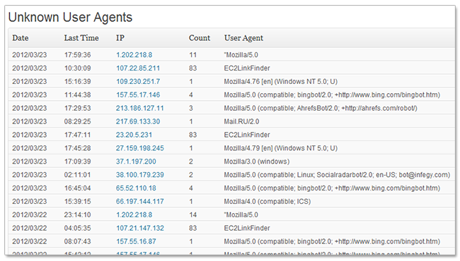
StatComm attempt
to understand the incoming traffic and separate users from spiders.
This decision is based on identifiers provided by the browser signatuer
(User Agent String). When it
fails to recognize it, the Agent is listed on this Category. Due the
changing nature of Internet and browsers, the Agent string is always
growing, requiring that
StatComm
update its internal Agent database
from time to time.
8. Multisite
StatComm 1.7.20
introduces multisite capability, a feature highly requested . The
multisite version allows one installation and a network-wide running,
installation and global uninstall.
The current Statcomm version adresses the following aspects:
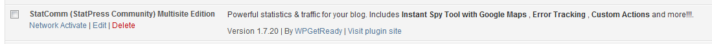
- One-click network wide installation & uninstall
- One
page for global administration settings. When you activate Statcomm
from Network, you'll have a page to control global settings. These
settings are the sam as Advanced Options tab, but controlled globally.
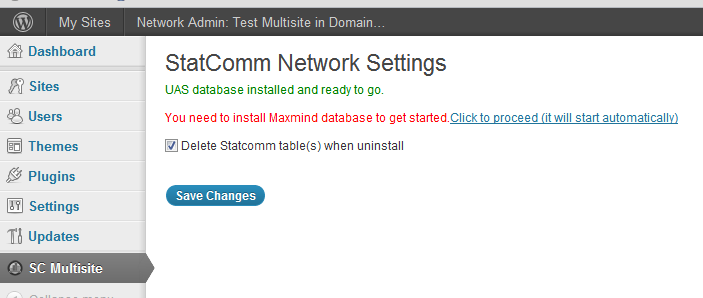
- Optionally
delete all the tables when uninstall. This option works in
all-or-nothing behavior. As Network administrator you won't go blog by
blog deleting tables after uninstall. Also, you can decide to keep the
table for a future upgrade.
- All sites will share the same User
Agent database and Maxmind database. Is up to the Network Admin to keep
these settings updated, a task that maybe you have to do once every 6
months.
Consider these facts when you activate StatComm in a Wordpress network site:
- The current version (1.7.20) was tested using subdomain configuration only. Please read Before You Create a Network to understand what we mean.
- Be aware the multisite mode using differents paths is currently untested.
- When you activate StatComm network-wide, the advanced settings tab is disabled for all
users (including Network Admin). A message will be displayed for every
user if he/she tries to access to Advanced Tab. Only a Super Admin
(Network Admin) can control these settings from the Network Admin
Dashboard.
- Currently, a single Statcomm install create some
option settings, and
also a table. In multisite environment, it creates one table per site.
Consider this last aspect if you have an extended network. If you have
100 sites in the network, it means that Statcomm will create 100 new
tables, one per site, which it could delay the startup and stress the
site space resources in the long run.
- Current
version attempts to upgrade the StatComm table if it is found.
Depending on how much data is in the table, it can take some time (as
much as one minute in 200k tables for example). In multisite
environment and worst case scenario, this time can be multiplied by
the number of sites in the network. Next plugin version will try to
determine first if the table needs an upgrade skip the process if it
doesn't need one.
- Currently there are no concerns about
performance. StatComm as it is doesn't consume many resources and the
panel is currently optimized to cache most of results.
9. Subplugins
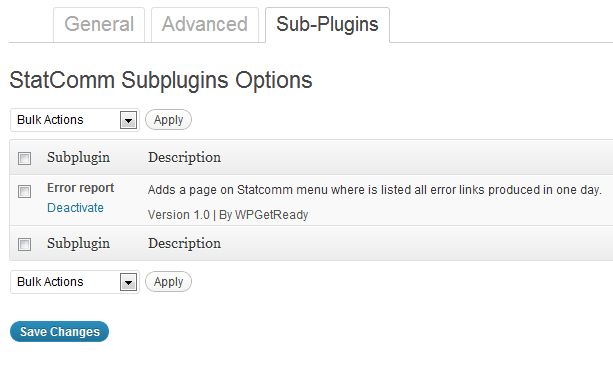
While
Statcomm complexity is increasing and more functionality is added on
every version. But for many user, some of these added
functionality could bring small or not benefit. That's why we decide to
build a custom functionality to get in control of the overall present
and future functionalities. Subplugins work much like plugins, but its
functionality is circunscribed to Statcomm helpers.
Some principles that applies to subplugins:
- Subplugins are packaged with Statcomm. When you install the plugin, it will include subplugins as well.
- Subplugins currently has to be activated to be used. Initial state is deactivated
- Subplugins only can be activated/deactivated. They don't uninstall or update independently of Statcomm plugin.
- Subplugins resides on [Statcomm-plugin-folder]/subplugins folder.
- Subplugins are much like plugins , using Statcomm internal framework to do its task.
- Subplugins uses same header as the plugins.
- Any
developer who develop plugins ,can develop a subplugin. After creating
a subplugin, drop into subplugin folder to be listed and then activate
it.
Subplugins & Multisite
Subplugin are also enabled for
multisite. In the current development stage, we've decided for simplification that
subplugin activation will be controlled by network administrator and no one else.
Administrators on sites over a Wordpress network won't be
able to control activation settings, although they can use the
subplugin functionality if it is activated.
1. Subplugin: Error Report
The Error Report subplugin adds a
custom functionality to Statcomm covering a requested feature. It
displays a detailed list of errors (mostly 404 & 403 errors)
currently happened in the site. Follows these steps to activate
Error Report:
1. If you are an administrator (single site) or
network administrator, go to the Options page to configure it
2. After activation, a page will be appear on the
bottom of Statcomm page. Also, you will see an ER links under
every column in the Statcomm Overview chart. The links will take you
the Error report for a specific date in time.
3. The links goes straight to Error Report where you
can see a error resume for every page. Current version doesn't have any
icons, but it will be solved to the next version 1.7.50
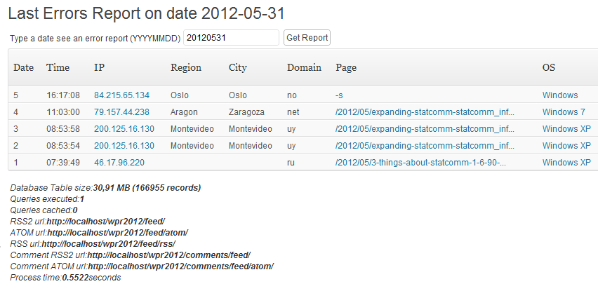
4.
StatComm
Advanced Features
Although
StatComm
provides a great deal of information, it has many other features which
improves its functionality.
Since
StatComm 1.6.3, all information about spiders, user agents (spiders and
browsers) and operative systems is handled using a new API
(see
FAQ in this document
for more information)
Some of these characteristics will be
expanded for easier maintenance. Perhaps one of the most interesting
and not-so-known features are their
custom definition table
(.dat tables) and also their user agent data (
.ini tables) to
store . All those definition
tables are stored on the plugin location, under the
def folder,
and those tables play a key rol on
StatComm
configuration.
- Ban IP feature: the banips.dat file
keeps a
list of ip to be rejected. When a user try to get your blog through any
IP listed on this table definition, it will automatically banned (the
plugin does not track activity for this ip).
- New in StatComm 1.6.3: the plugin uses a new engine to keep
track of incoming users/spiders, relying on three different files:
- uasdata.ini:
Contains all information about browsers, operative systems and
spiders.
- cache.ini:
temporal file used by the engine to mark version and when check for
updates.
- searchterm.ini:
track search engines and extract searched terms from the referrer.
- Files browser.dat,os.dat,searchengines.dat
and spider.dat becomes obsolete from StatComm 1.6.3. If
you install this plugin manually, you can safely remove it.
- Since 1.6.50 we remade the plugin to get updates from
the User
Agent String database (UAS DB) using a more
reliable service.
- Since version 1.6.60 the plugin uses the Maxmind geolocation database
to provide enhanced information from the incoming traffic.
Extensibility
Since version 1.6.90 Statcomm provides a way to extend and handle the
data stored on its internal database table.
the action
statcomm_info
fires after a visitor enters you site,
In version 1.7.01 we introduce the filter
statcomm_preinsert where
you can control/filter and modify the information before Statcomm save
it to the databse.
Since these features are very advanced, we suggest go to
Expanding StatComm: statcomm_info action
for extra documentation and some basic examples.
Also, we added a way to prgrammaticaly pre-filter the incoming traffic
using the
statcomm_preinsert
filter. See
this example to see how to use this filter.
5.
Language features and considerations
StatComm
supports currently many languages including English, Italian,
Spanish, French, German, Russian, Norwegian, Dutch, Brazilian
(Portugues), Turkish and Swedish. More languages will be supported
in the newer versions.
The language will switch automatically depending on the Wordpress
WPLANG value.
This can be defined on the
wp-config.php
Wordpress file.
Example:
define('WPLANG',
'es_ES'); //switching Wordpress to Spanish, will automatically set
StatComm to Spanish.
6. Widgets
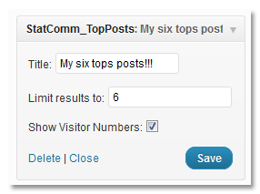
Top Posts Widget
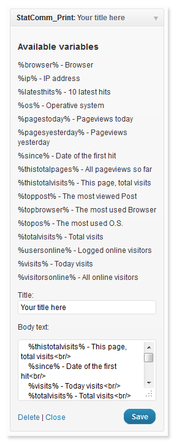
Print widget
StatComm offers two
widgets to show relevant information about your traffic stats.
The TopPosts
widgets shows the most viewed pages on your site, while the StatComm Custom View widget
allows you to present the data in multiple ways depending on your
choice.
In version 1.6.2 both widget were updated. The Topposts
widget will be
also improved in the on the incoming versions.
7.
Services
used by StatComm
Statcomm
relies on Internet services to keep it running. In normal circunstances
you won't even know that, but is good to know what services
are
used with StatComm to give them the credit they deserves:
hostip API
: provides geolocalization and also flags icons. Note: since v1.6.70
this feature is provided by Maxmind database. - Project
Honeypot: this service for spam analysis is used in the Unknown User Agents
menu to validate and inspect potential dangerous ip.
- User Agent String info:
this site provides an API to access to the information about
user
agents around the Internet, with a database frequently updated. StatComm
includes a class to handle the complexity of retrieving
information and automatically download the user agent database. Update:
1.6.4 currently has user agent database running but the download is
disabled. We detect that potential users could be banned from getting
database from the original site so, what it was solved in version 1.6.5
- User
Agent String Database Repository (UAS db Repository):
since v1.6.5 StatComm
updates the UAS using a custom service in more
stable way. The updates runs automatically . We recommend updates every
2 weeks, this can be changed from the settings from 1 week or
to a month, since the info
is not critical.
- Maxmind
Geolocation database: Since
version 1.6.60 is possible to use geolocation. Go to Options download
the geolocation database and activate using the checkbox. The plugin
automatically checks if the database is available to provide additional
information in the reports.
8. Data Migration
StatComm 1.7.01 is the first version providing a tool for migrating
data from unsupported Statpress-like plugins.
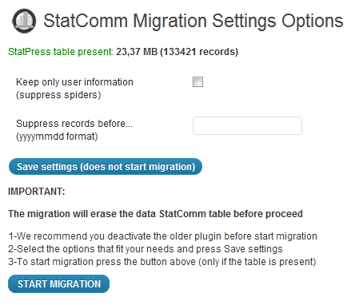
The Migration Tool has some
aspects to be noticed:
- It
is oriented to migrate data from statpress plugins. The Migration Tool
expect to find a statpress table on your database. If none is found the
Migration Tool is automatically disabled.
- The Migration Tool is capable
of migration from many different plugins described on Migrating
from Statpress plugins to StatComm: a how-to guide
- The tool provides two simple but powerful options to filter
information:
- Suppress
spiders: this option will discard all the spider
information, keeping the user traffic alone. It is recommended.
- Supress
records before...:
this option only keeps traffic date from one date and ahead. Useful if
you have a huge table or you decide to discard some information.When we
say huge we are talking tables with 500k records or more.
- Before start, the tool estimates the table size and number
of record to migrate. (in green)
- You will need to save the options first (clicking Save
settings) and then press the START MIGRATION button.
Be aware of the following limitations:
- The
migration is slow. In our tests, it took 29 minutes to migrate 120k
records in an average-to-worst-scenario(68 rec/sec). In a
regular server you can expect averages from 100 to 500
rec/sec. The reason
behind that speed is because the plugin normalizes all the incoming
data to get a properly standarized information. The speed can be
improved filtering spiders.
- We tested also other ways
to data migration . Due our findings are interesting but long enough,
please see Migrating
from Statpress plugins to StatComm: a how-to guide
- (2012-08-06): In some servers the migration can't be done due user restrictions.
The migration procedure tries to set adjust set_time_limit
variable. If StatComm fails to set this variable properly , an error
will be raised . Version 1.7.10 and above is capable of detecting and displaying
such condition. In those cases the migration is not possible and it
will be disabled. Ask an administrator to help you in this scenario.
- Once
the migration is started, keep the page open until it is finished.
Closing the page before ending the process will end up in an incomplete
migration. You can restart the migration but you cannot continue
previous failed migrations.
9. FAQ
- Is there any special
considerations about installation?
- Since version 1.6.3, StatComm
uses a new API to retrieve information about user agents. Therefore, it
will need the def folder
under the plugin installation folder to be writable (777) in
order to download the user agent database and perform updates to the
cache.
- After that the user agent database requires no manual
maintenance. It is handled automatically.
- Since version 1.6.5 you can control the service, setting
the refresh update and also enabling/disabling the service. The
settings were
introduced if you want to tighten your WP installation and you want to
leave def folder read only and stop refreshing UAS db.
- Does
Statcomm needs to communicate to another services?
- The plugin becomes slow
when I have so much data!
- Since version 1.7.10 this
problem has been contained.. Our projections indicates that
StatComm should handle one
million records
easily. A new cache system combined with the table database
redesign should be enough to manage many millions of
records.We currently consider that
Statcomm should work fine with around 1M to 3M records (one to
three
millions records). We don't have samples of
that size (yet) so this is theoretical.
- StatComm records table takes
database space. Every 150K records takes about 25 to 30MB database
space.We don't recommend go further than 500MB (about 2 million records more or less).
That should be enough for middle to big sites, Future releases of
Statcomm will deal about consolidation (summarize information
to provide historic information)
- If you want to shrink table database size, there are few
improvements you can do :
- Check the footer on overview
page. You will see the table size and how many records you are
currently handling. We recommend for the current version to stay
below 1.000.000 records (one million)
- Drop information you consider useless.
Usually spider information tend to be as high as 60% (or more)
of the total information stored. If you want to delete spiders
information, there is an option to Not collect spiders
visits. You can also delete older information about
spiders, there is also an option to do that. Set it to an appropiate
value.
- If your traffic is high (above 10.000
daily) you can also want to delete older visits
- Why do I
bother collecting data.? Better keep it small and forget about
everything...
- 'I want it all' or 'keep as small as possible' strategies
are valid,
but consider this: StatComm will continue improving with the time. In
no-so-distant point in the future, we'll include analytics tools to
help you understand trends using your historic data(this year for
sure(2012)). When the time comes, you will learn a great deal
about your site just looking back your statistics. Try to keep a
balance between size and relevant information. If your site is
user-oriented, discarding spider information will keep your resources
high. But if you site is targetted for example to make analytic studies
about spiders, that might not be a good idea.
- What is the User Agent
String Database?
- The User Agent String Database (UAS DB)
is group of .ini files who provides detailed information
about
browsers, spiders, and operative systems from your traffic. This
database is provided by sites like User-Agent-String.info
. This plugin provides a way to handle this information and download
updates.
- Why using UAS
db against using older .dat files?: the
.dat files is a hardcoded format with no updates. Therefore, most
current version of Statpress and previous earliest StatComm versions
relied in
data which is becoming quickly obsolete. The UAS db provides a
straightforward solution to stay updated and get the most accurate
information from your traffic.
- What is the Maxmind database?
Maxmind is database used to find out information of users based on the
IP. It allows a very good degree of information although it is not
perfect. Statcomm is using a free version of this db. You cant get more
information on the original site of Maxmind .
- Where is the
Maxmind database stored? It is stored in the def folder on the
plugin location,
with the name GeoLiteCity.dat.
- I can't
download the database from Maxmind:
With slow connections, the database could be difficult to download.
Also, if you try to download it many times in a short period,
your ip could be banned from some time. Try later. In any case
you
can download the database, decompress it and put it on the plugin def folder.
The plugin will detect the file and you can proceed normally.
- Something isn't working
in the way it should!
- I have a suggestion to
make!
- Great! Please use the links above to contact us.
10.
Credits
StatComm
is a complete and much improved rewrite of StatPress, another
stats plugin. It provides a way to update from many
unsupported or outdated StatPress plugins variations.
A detailed
milestone is provided in the main site.
StatComm
is
currently under development, providing support and appreciating the
feedback from its starting community.
This project is based on the develop of thousands of
contributors along the web
& time. Without them, this work would be unfeasible.
The aim of
StatComm
Project is to bring to the present those efforts,
project it to the future and build the best and most advanced stats
plugin conceivable.
"The best software is not
about brilliant coding. It's about careful listening".
{kind=link}